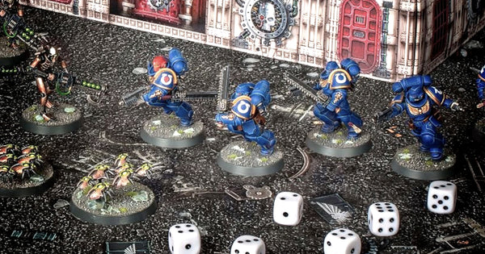

product categorieën
Warhammer 40k
Warhammer 40,000 is een miniatuur wargame geproduceerd door Games Workshop. Het is het populairste miniatuuroorlogsspel ter wereld. De eerste editie van het rulebook werd gepubliceerd in september 1987 en de negende en huidige editie werd uitgebracht in juli 2020.
Net als in andere miniatuur wargames, voeren spelers gevechten uit met behulp van miniatuurmodellen. Het speelveld is een tafelmodel van een slagveld, bestaande uit modellen van gebouwen, heuvels, bomen en andere terreinkenmerken. Elke speler verplaatst om de beurt zijn mini's over het slagveld en vecht tegen de mini's van hun tegenstander. Deze gevechten worden opgelost met dobbelstenen en eenvoudige rekenkunde.
Warhammer 40.000 speelt zich af in de verre toekomst, waar een stilstaande menselijke beschaving wordt geteisterd door vijandige buitenaardse wezens en bovennatuurlijke wezens. De modellen in het spel zijn een mix van mensen, buitenaardse wezens en bovennatuurlijke monsters, met futuristische wapens en bovennatuurlijke krachten. De fictieve setting van het spel is ontwikkeld door middel van een groot aantal romans, uitgegeven door Black Library (de uitgeverijafdeling van Games Workshop).
wie ben ik?
Wie is de Shopkeeper? Wel, een beetje over mezelf dan. Ik ben dus Kobe Ponet en ik ben de creator van games quest! 19 met een prachtige vriendin. Magic speler sinds Battle for Zendikar. Een 6-tal jaar dus. Roleplayer gedurende de voorbije 4 jaren, met een voorkeur voor D&D als de forever DM, maar ik sta open voor alle systemen. Wargamen doe ik maar sinds kort maar ik heb al vele minis geschildert en games gespeeld.
Waarom 40k
Het is mijn favoriete wargame want het is heel persoonlijk en tactiel, de Warhammer 40k-game zelf is een ongelooflijk boeiende manier om een middag door te brengen. Het wordt des te leuker omdat je deze epische scenario's speelt met je minis, op maat gemaakt en geverfd zoals jij zelf wilt dat ze eruitzien.